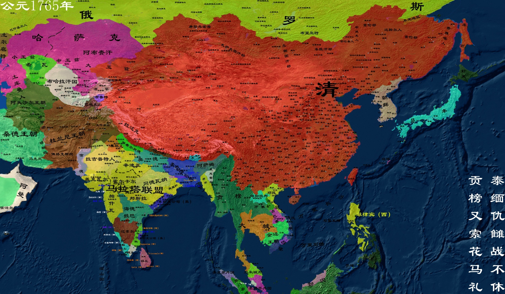

清朝
清朝（1636年—1912年）是中国历史上第二个由少数民族建立的统一政权 ，也是中国最后一个封建帝制国家。共有十二帝，国祚267年。 1911年，辛亥革命爆发，清朝统治瓦解，1912年2月12日，清帝被迫退位，清灭亡。
【相关人物】
[康熙]
[乾隆]
[慈禧]
.......
[更多人物]
【相关书籍】
[康乾之治]
.......
[更多书籍]

公元1636年 皇太极称帝，建清
清太宗爱新觉罗·皇太极（1592年11月28日-1643年9月21日），又译黄台吉。 清太祖爱新觉罗·努尔哈赤第八子，清初杰出的军事家、政治家，后金大汗、蒙古大汗、清朝开国皇帝。
公元1637年 《天工开物》
《天工开物》由宋应星初刊于1637年（明崇祯十年丁丑），共三卷十八篇，全书收录了农业、手工业，诸如机械、砖瓦、陶瓷、硫磺、烛、纸、兵器、火药、纺织、染色、制盐、采煤、榨油等生产技术。 《天工开物》是世界上第一部关于农业和手工业生产的综合性著作，是中国古代一部综合性的科学技术著作，有人也称它是一部百科全书式的著作，作者是明朝科学家宋应星。外国学者称它为“中国17世纪的工艺百科全书”。
公元1661年 郑成功收复台湾
郑成功收复台湾又称郑成功收复台湾之战，是指公元1661年南明将领郑成功驱逐窃取台湾的荷兰殖民者收复宝岛台湾的事件。 郑成功是17世纪著名的抗清名将因蒙隆武帝赐明朝国姓朱，赐名成功，世称“国姓爷”，又因蒙永历帝封延平王，称“郑延平” 。1624年（明天启四年），荷兰殖民主义者侵占中国台湾。郑成功下决心赶走侵略军。
公元1673年 三藩之乱
三藩之乱是清朝初期三个藩镇王发起的反清事件。三藩是指平西王吴三桂、平南王尚可喜、靖南王耿精忠。 清廷入关后为对付李自成农民军和南明政府的反抗，封云南的吴三桂、广东的尚可喜、福建的耿精忠为藩王。 1673年（康熙十二年）春，康熙皇帝作出撤藩的决定。
公元1839年 虎门销烟
虎门销烟（1839年6月）指中国清朝政府委任钦差大臣林则徐在广东虎门集中销毁鸦片的历史事件。此事后来成为第一次鸦片战争的导火线，《南京条约》也是此次战争时签订的。虎门销烟间接导致了不平等条约给华夏人民带来的伤害（割地赔款）。
公元1840年 第一次鸦片战争
鸦片战争（Opium War），即第一次鸦片战争（The First Anglo-Chinese war）。英国经常称其为第一次中英战争或“通商战争”，是1840年至1842年英国对中国发动的一场侵略战争，也是中国近代史的开端。
公元1842年 南京条约
《南京条约》（Treaty of Nanking），又称“万年和约” 、“白门条约” 、“江宁条约” ，是中国近代史上第一个不平等条约。该约于1842年8月29日（道光二十二年七月二十四日）， 由清廷代表耆英、伊里布、牛鉴与英国代表璞鼎查在停泊于南京下关江面的英舰皋华丽号上签订， 标志着第一次鸦片战争的结束。
公元1851年 太平天国运动
太平天国运动是清朝咸丰元年到同治三年（1851年—1864年）期间，由洪秀全、杨秀清、萧朝贵、冯云山、韦昌辉、石达开等组成的领导集团从广西金田村率先发起的反对清朝封建统治和外国资本主义侵略的农民起义战争，是19世纪中叶中国最大的一场大规模反清运动。1864年，随着太平天囯首都天京的（南京）陷落，标志着运动失败。
公元1856年 第二次鸦片战争
第二次鸦片战争是1856年10月至1860年10月英、法两国在美、俄支持下联合发动的侵华战争。其目的是英、法为了进一步打开中国市场，扩大在华侵略利益。因为英法分别以亚罗号事件及马神甫事件为借口发动战争，所以被英国人称为“亚罗号战争”（The Arrow War）。
公元1860年 火烧圆明园
火烧圆明园在狭义上指焚烧圆明园，广义概念焚烧范围不仅只是圆明园一处，而是京西的皇家三山五园等，其焚毁的范围及程度远远比圆明园大得多。
公元1876年 左宗棠收复新疆
清军收复新疆之战，又称“左宗棠收复新疆” ，是晚清钦差大臣左宗棠统帅清军，消灭侵占新疆的阿古柏势力、维护中国主权和领土完整的战争。
公元1894年 甲午战争
中日甲午战争（日本称：日清战争，朝鲜半岛称：清日战争，西方国家称：Sino-Japanese War/第一次中日战争），是19世纪末日本侵略中国和朝鲜的战争。按中国干支纪年，战争爆发的1894年为甲午年，故称甲午战争。
公元1876年 左宗棠收复新疆
清军收复新疆之战，又称“左宗棠收复新疆” ，是晚清钦差大臣左宗棠统帅清军，消灭侵占新疆的阿古柏势力、维护中国主权和领土完整的战争。
公元1894年 甲午战争
中日甲午战争（日本称：日清战争，朝鲜半岛称：清日战争，西方国家称：Sino-Japanese War/第一次中日战争），是19世纪末日本侵略中国和朝鲜的战争。按中国干支纪年，战争爆发的1894年为甲午年，故称甲午战争。
公元1898年 戊戌变法
戊戌变法，又称百日维新、维新变法、维新运动，是晚清时期以康有为、梁启超为代表的维新派人士通过光绪帝进行倡导学习西方，提倡科学文化，改革政治、教育制度，发展农、工、商业等的资产阶级改良运动。
公元1900年 义和团运动
义和团又称义和拳、义和团事件、庚子事变，拳匪、拳乱、庚子拳乱等，是19世纪末中国发生的一场以“扶清灭洋”为口号的农民运动。这一运动粉碎了帝国主义列强瓜分中国的狂妄计划，沉重打击了清政府的反动统治，加速了它的灭亡。
公元1901年 辛丑条约
《辛丑条约》，亦称“辛丑各国和约”、“北京议定书”，是中国清政府代表奕劻、李鸿章与英、美、俄、法、德、意、日、奥、比、西、荷十一国外交代表，在义和团运动失败、八国联军攻入北京后，于光绪二十七年（辛丑年）七月二十五日（1901年9月7日）在北京签订的不平等条约。
公元1911年 辛亥革命，清亡
辛亥革命，是指发生于中国农历辛亥年（清宣统三年），即公元1911年至1912年初， 旨在推翻清朝专制帝制、建立共和政体的全国性革命。狭义的辛亥革命，指的是自1911年10月10日 （农历八月十九）夜武昌起义爆发，至1912年元旦孙中山就职中华民国临时大总统前后这一段时间中国 所发生的革命事件。广义上辛亥革命指自十九世纪末（一般从1894年兴中会成立开始， 但也有学者认为从1905年中国同盟会成立算起）迄辛亥年成功推翻清朝统治在中国出现的连场革命运动。